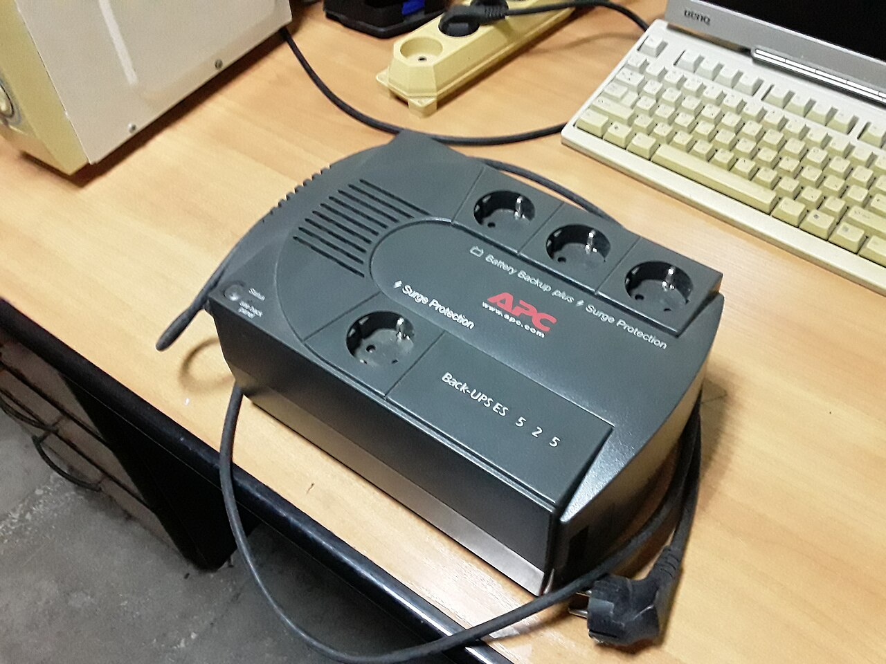
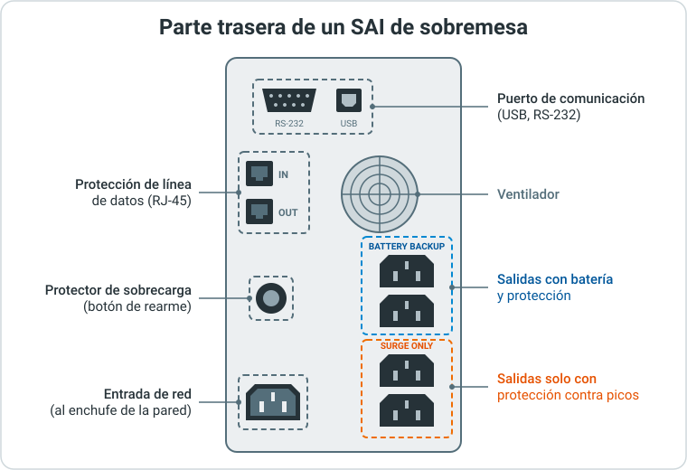

2. Sistemas de Alimentación Ininterrumpida (SAI)¶
2.1. Qué es un SAI¶
En el apartado 1 vimos que el suministro eléctrico es una de las bases del CPD. Ahora estudiamos su principal protección.
Un SAI (Sistema de Alimentación Ininterrumpida, en inglés UPS, Uninterruptible Power Supply) es un equipo que se coloca entre la red eléctrica y los dispositivos que queremos proteger. Tiene baterías que dan energía cuando falla la red y, además, filtra los problemas de la corriente.

SAI de sobremesa (APC Back-UPS ES 525) con tomas tipo Schuko para los equipos. Foto: MSDN.WhiteKnight (Wikimedia Commons), CC0.

Un SAI no está pensado para trabajar horas sin red. Su función es doble:
- Aguantar cortes cortos (segundos o pocos minutos) sin que los equipos se enteren.
- En cortes largos, dar tiempo para apagar los equipos de forma ordenada o para que arranque un generador.
¿Por qué importa un apagado ordenado?
Si un servidor se apaga de golpe, se pueden perder los datos que estaban en memoria, corromper el sistema de ficheros o una base de datos, y dañar los discos. Un apagado ordenado cierra los servicios y escribe todo en disco antes de apagar.
2.2. Anomalías eléctricas¶
La corriente que llega de la red no siempre es perfecta. En España la red es de 230 V y 50 Hz. Estas son las anomalías más habituales:
| Anomalía | Qué ocurre | Efecto en los equipos |
|---|---|---|
| Corte (apagón) | Desaparece la tensión durante segundos u horas. | Apagado brusco, pérdida de datos. |
| Microcorte | Corte de milisegundos. | Reinicios inesperados, bloqueos. |
| Subtensión o caída de tensión | La tensión baja por debajo de lo normal (p. ej. 190 V) durante un tiempo. | Fuentes de alimentación forzadas, reinicios. |
| Sobretensión | La tensión sube por encima de lo normal (p. ej. 260 V) durante un tiempo. | Calentamiento y desgaste de componentes. |
| Pico o transitorio | Subida de tensión muy alta y muy corta (rayos, arranque de motores). | Componentes quemados al instante. |
| Ruido eléctrico | Interferencias de alta frecuencia en la línea (motores, fluorescentes). | Errores en datos, fallos aleatorios. |
| Variación de frecuencia | La frecuencia se aleja de 50 Hz (habitual con generadores). | Funcionamiento inestable de algunos equipos. |
Caso real: British Airways (2017)
El 27 de mayo de 2017, un técnico desconectó la alimentación de un CPD de British Airways cerca del aeropuerto de Heathrow (Londres). Al volver a conectarla de forma descontrolada, se produjo una sobretensión que dañó físicamente servidores y cuadros eléctricos. Los sistemas de respaldo no evitaron la caída.
- Se cancelaron 479 vuelos el primer día (el 59 % de la programación) y 193 el segundo.
- Unos 75 000 pasajeros se quedaron en tierra durante tres días.
- El coste se estimó en unos 100 millones de euros.
El técnico tenía autorización para estar en la sala, pero no para hacer esa maniobra. Lección: las operaciones eléctricas en un CPD deben seguir procedimientos escritos y la instalación no debe depender de una sola persona ni de un solo punto de fallo. Más información: Data Center Knowledge.
2.3. Componentes y funcionamiento¶
Un SAI tiene, como mínimo, estos elementos:
- Rectificador / cargador: convierte la corriente alterna (AC) de la red en continua (DC) para cargar las baterías.
- Baterías: almacenan la energía. Normalmente son de plomo-ácido selladas (VRLA); en modelos modernos, de ion-litio.
- Inversor: convierte la corriente continua de las baterías en alterna para alimentar los equipos.
- Conmutador (transfer switch): cambia la alimentación de los equipos entre la red y el inversor.
- Filtros y protección contra picos: eliminan ruido y transitorios.
En la parte trasera de un SAI de sobremesa encontramos las conexiones:

Conexiones traseras de un SAI de sobremesa
- Entrada de red: se conecta al enchufe de la pared.
- Salidas protegidas: tomas para los equipos. En muchos modelos hay dos grupos: unas con batería y protección (Battery backup), y otras solo con protección contra picos y sin batería (Surge only). Allí se conectan equipos que no necesitan seguir encendidos durante un corte, como una impresora.
- Puerto de comunicación (USB, RS-232 o tarjeta de red): permite que un ordenador supervise el SAI y se apague solo cuando la batería se agota.
- Protección de línea telefónica / de datos (RJ-11, RJ-45): protege contra picos que entran por el cable de comunicaciones. El cable que viene de la red se conecta a IN y el equipo, a OUT.
- Protector de sobrecarga: corta la corriente si los equipos conectados consumen más de lo que el SAI soporta. Tras quitar la carga sobrante, se rearma pulsando el botón.
2.4. Tipos de SAI¶
Hay tres tipos principales. Se diferencian en cómo llega la energía a los equipos cuando la red funciona bien.
Los equipos se alimentan directamente de la red. Si la red falla, el conmutador pasa a batería.
flowchart LR
R[Red eléctrica] --> F[Filtro] --> C{Conmutador}
C --> E[Equipos]
R --> RC[Cargador] --> B[(Baterías)] --> I[Inversor] -.->|solo si falla la red| C- Tiempo de transferencia: entre 2 y 10 ms (en algunos modelos más).
- Protege de: cortes, picos y algo de ruido. No corrige subtensiones ni sobretensiones; si ocurren, pasa a batería.
- Uso: equipos domésticos y puestos de trabajo poco críticos. Es el más barato.
Como el offline, pero con un regulador automático de tensión (AVR, Automatic Voltage Regulator). El AVR sube o baja la tensión sin gastar batería.
flowchart LR
R[Red eléctrica] --> F[Filtro] --> AVR[AVR<br>regulador] --> C{Conmutador}
C --> E[Equipos]
R --> RC[Cargador] --> B[(Baterías)] --> I[Inversor] -.->|solo si falla la red| C- Tiempo de transferencia: entre 2 y 4 ms.
- Protege de: lo mismo que el offline y, además, subtensiones y sobretensiones moderadas.
- Uso: pequeñas oficinas, armarios de red, servidores pequeños. Es el más habitual.
La energía siempre pasa por las baterías y el inversor: la red se convierte a continua y luego otra vez a alterna. Los equipos nunca reciben la corriente de la red directamente.
flowchart LR
R[Red eléctrica] --> RC[Rectificador] --> B[(Baterías)] --> I[Inversor] --> E[Equipos]
R -. bypass si falla el SAI .-> E- Tiempo de transferencia: 0 ms. No hay conmutación.
- Protege de: todas las anomalías, incluidas las variaciones de frecuencia. La salida es una onda limpia y estable.
- Uso: CPD, servidores críticos, equipos médicos. Es el más caro, consume más y hace más ruido.
¿Por qué los ordenadores aguantan el tiempo de transferencia?
Las fuentes de alimentación de los ordenadores tienen condensadores que mantienen la tensión unos 16-20 ms tras un corte (hold-up time). Por eso un corte de 2-10 ms no apaga el equipo.
Onda senoidal pura o simulada
La red eléctrica genera una onda senoidal (suave). Muchos SAI offline y line-interactive baratos generan, en batería, una onda simulada (escalonada). Algunas fuentes modernas con PFC activo (corrección del factor de potencia) pueden apagarse o hacer ruido con onda simulada. Para servidores, compra SAI de onda senoidal pura.
| Offline | Line-interactive | Online | |
|---|---|---|---|
| Tiempo de transferencia | 2-10 ms | 2-4 ms | 0 ms |
| Corrige sub/sobretensiones | ❌ | ✅ (moderadas) | ✅ |
| Corrige frecuencia y ruido | ❌ | ❌ | ✅ |
| Coste | Bajo | Medio | Alto |
| Uso típico | Hogar, puesto de trabajo | Oficina, rack pequeño | CPD, sistemas críticos |
Ejercicio 1: Elegir el tipo de SAI
Indica qué tipo de SAI (offline, line-interactive u online) recomendarías en cada caso y por qué:
- El ordenador de casa de un estudiante.
- Una gestoría con 8 empleados, un servidor de ficheros y un router, en un polígono donde la tensión baja a menudo cuando arrancan las máquinas de las naves vecinas.
- Los servidores de historias clínicas de un hospital.
Solución: Ejercicio 1
- Offline. Es barato y suficiente para cortes puntuales en un equipo no crítico.
- Line-interactive. Su AVR corrige las caídas de tensión frecuentes sin gastar batería. Un offline pasaría a batería continuamente y las desgastaría.
- Online (doble conversión). Son sistemas críticos: no se admite ningún tiempo de transferencia y se necesita una alimentación limpia frente a cualquier anomalía. Además, deberían tener doble fuente conectada a dos SAI distintos y un generador.
2.5. Características técnicas¶
Al leer la ficha técnica de un SAI, fíjate en estos datos:
- Potencia aparente (VA): voltioamperios. Es la cifra grande que aparece en el nombre del modelo (p. ej. "SAI 1500 VA").
- Potencia real o activa (W): vatios. Es la energía que realmente consumen los equipos.
- Factor de potencia (FP): relación entre ambas: W = VA × FP. En SAI de sobremesa suele estar entre 0,6 y 0,7; en SAI profesionales, entre 0,9 y 1.
- Autonomía: tiempo que aguanta con batería. Depende de la carga: a media carga dura bastante más que a plena carga. Los fabricantes dan una tabla o curva de autonomía.
- Número y tipo de tomas: Schuko (enchufe doméstico) o IEC C13/C19 (las habituales en servidores y racks).
- Formato: torre o rack (se mide en U, unidades de altura de un rack: 1U = 4,45 cm).
- Comunicaciones: USB, RS-232 o tarjeta de red con SNMP (protocolo para gestionar equipos por red).
- Baterías intercambiables en caliente (hot-swap): se cambian sin apagar el SAI.
Error típico: fijarse solo en los VA
Un SAI de 1000 VA con FP 0,6 solo da 600 W. Si conectas equipos que consumen 800 W, el SAI se sobrecarga aunque "1000" parezca suficiente. Comprueba siempre los VA y los W.
2.6. Dimensionamiento de un SAI¶
Dimensionar es calcular qué SAI necesitamos. El proceso tiene cinco pasos:
- Lista los equipos que se van a conectar y su consumo real en vatios.
- Suma los consumos.
- Añade un margen del 20-30 % para crecimiento futuro y para no trabajar al límite.
- Convierte a VA dividiendo por el factor de potencia del SAI: VA = W / FP.
- Comprueba la autonomía en la tabla del fabricante para esa carga.
Consumo real, no potencia de la fuente
Una fuente de 750 W no significa que el equipo consuma 750 W: ese es su máximo. El consumo real suele ser mucho menor. Para medirlo usa un vatímetro de enchufe, los datos del fabricante o la información de consumo del servidor (iDRAC, iLO, IPMI).
Ejemplo: SAI para un rack pequeño
Una empresa quiere proteger su rack:
| Equipo | Consumo real |
|---|---|
| 2 servidores (300 W cada uno) | 600 W |
| NAS | 90 W |
| Switch | 45 W |
| Router + cortafuegos | 35 W |
| Total | 770 W |
- Con margen del 25 %: 770 × 1,25 ≈ 963 W.
- El SAI elegido tiene FP 0,9: 963 / 0,9 ≈ 1070 VA.
- Elegimos un modelo comercial superior: 1500 VA / 1350 W, line-interactive u online, formato rack.
La carga real será 770 / 1350 ≈ 57 % de su capacidad. Según la tabla del fabricante, a esa carga la autonomía será de unos minutos: suficiente para un apagado ordenado, no para seguir trabajando.
Si no tenemos la tabla del fabricante, podemos hacer una estimación aproximada de la autonomía:
Autonomía (horas) ≈ (Voltaje batería × Capacidad en Ah × nº baterías × 0,85) / Consumo (W)
El 0,85 representa las pérdidas del inversor. Por ejemplo, con 2 baterías de 12 V y 9 Ah y un consumo de 770 W: (12 × 9 × 2 × 0,85) / 770 ≈ 0,24 h ≈ 14 minutos.
La estimación es optimista
Con cargas altas las baterías rinden menos de lo que indica su capacidad nominal, y pierden capacidad con los años. Usa esta fórmula solo como orientación y confirma siempre con la tabla del fabricante.
Ejercicio 2: Revisar las cifras de un SAI
Un compañero quiere conectar a un SAI de 1000 VA con FP 0,6 dos servidores que consumen 350 W cada uno. Dice que "700 es menos que 1000, así que vale". ¿Tiene razón? ¿Qué SAI mínimo necesitaría con un margen del 25 % y el mismo FP?
Solución: Ejercicio 2
No tiene razón. Compara vatios con voltioamperios. El SAI solo da 1000 × 0,6 = 600 W, menos que los 700 W de los servidores: se sobrecargaría.
Con margen: 700 × 1,25 = 875 W → 875 / 0,6 ≈ 1458 VA. Necesitaría un SAI de al menos 1500 VA (900 W) o, mejor, un modelo profesional con FP 0,9.
2.7. Puntos de aplicación¶
Los puntos de aplicación son los lugares de la instalación donde colocamos SAI. No todo necesita SAI: hay que priorizar según lo crítico que sea cada equipo.
Qué proteger (por orden de prioridad):
- Servidores y almacenamiento (NAS, cabinas): un apagado brusco puede corromper datos.
- Electrónica de red: router, cortafuegos, switches principales. Si caen, nadie trabaja aunque los servidores sigan encendidos.
- Sistemas de seguridad: cámaras, control de acceso, alarmas.
- Puestos de trabajo críticos: centralita, recepción, equipos de producción o de facturación.
Qué no conectar al SAI:
- Impresoras láser, calefactores, cafeteras o aires acondicionados domésticos. Tienen picos de consumo muy altos al arrancar y pueden sobrecargar el SAI.
- Regletas encadenadas: añaden riesgo y dificultan saber qué está conectado.
Según el tamaño de la instalación, hay distintos enfoques:
| Enfoque | Descripción | Dónde |
|---|---|---|
| SAI individual | Un SAI pequeño por equipo. | Puesto de trabajo, servidor aislado. |
| SAI por rack | Un SAI en rack que alimenta todo el armario. | Oficinas, pequeños CPD. |
| SAI centralizado | Uno o varios SAI grandes que alimentan toda la sala a través de PDU (regletas de rack gestionables). | CPD medianos y grandes. |
En un CPD, el SAI forma parte de una cadena con el generador:
flowchart LR
R[Red eléctrica] --> ATS{ATS<br>conmutador<br>automático}
G[Generador<br>diésel] --> ATS
ATS --> SA[SAI A] --> PA[PDU A]
ATS --> SB[SAI B] --> PB[PDU B]
PA --> S1[Servidor<br>fuente 1]
PB --> S2[Servidor<br>fuente 2]- Si falla la red, el SAI mantiene los equipos mientras arranca el generador (suele tardar entre 10 y 30 segundos).
- El ATS (Automatic Transfer Switch) cambia la alimentación de la red al generador.
- Los servidores tienen dos fuentes de alimentación, cada una conectada a una línea distinta (A y B). Si falla un SAI o una PDU, el servidor sigue funcionando con la otra.
No conectes las dos fuentes al mismo SAI
Si un servidor tiene fuente redundante pero ambas van a la misma regleta o al mismo SAI, la redundancia no sirve de nada: hay un punto único de fallo.
Ejercicio 3: Puntos de aplicación y dimensionamiento en un aula
Un aula de informática tiene:
- 20 ordenadores de alumnos (90 W cada uno, monitor incluido).
- 1 servidor del aula (150 W).
- 1 switch (30 W), 1 router (15 W) y 1 punto de acceso Wi-Fi (10 W), en un armario de red.
- 1 impresora láser.
El presupuesto es limitado.
- ¿Qué equipos conectarías al SAI? Justifica tu respuesta.
- Calcula la potencia necesaria con un margen del 25 % y los VA, si el SAI tiene un factor de potencia de 0,6.
- ¿Qué modelo comercial elegirías: 650 VA, 1000 VA o 1500 VA?
Solución: Ejercicio 3
- Se protegen el servidor y la electrónica de red (switch, router y punto de acceso). Son los equipos de los que depende toda el aula y el servidor puede perder datos con un apagado brusco. Los 20 ordenadores de alumnos suman 1800 W: protegerlos multiplicaría el coste y su pérdida es menor (trabajo no guardado; se mitiga con autoguardado o guardando en el servidor). La impresora láser nunca se conecta al SAI por sus picos de consumo.
- Consumo: 150 + 30 + 15 + 10 = 205 W. Con margen: 205 × 1,25 ≈ 256 W. En VA: 256 / 0,6 ≈ 427 VA.
- 650 VA (650 × 0,6 = 390 W ≥ 256 W). El de 1000 VA daría más autonomía si el presupuesto lo permite. Además, conviene conectar el servidor al SAI por USB para que se apague solo.
2.8. Verificación y mantenimiento¶
Un SAI que no se revisa puede fallar justo cuando se necesita. Las baterías son la pieza que más falla.
Comprobaciones periódicas:
- Autotest: casi todos los SAI tienen un botón o comando de autotest que pasa a batería unos segundos. Hazlo cada mes o programa que se haga solo.
- Indicadores y alarmas: revisa los LED o la pantalla (carga, estado de la batería, sobrecarga) y no ignores los pitidos.
- Prueba de corte controlada: con equipos no críticos, desconecta la entrada de red y comprueba que los equipos siguen funcionando y que el software de apagado actúa. Hazlo en una ventana de mantenimiento planificada.
- Registro de eventos: el software del SAI guarda un historial de cortes y transferencias. Sirve para detectar problemas en la red eléctrica.
- Carga: comprueba que no supera el 80 % de la capacidad.
Baterías:
- Duran normalmente entre 3 y 5 años (plomo-ácido).
- El calor las degrada: por cada 10 °C por encima de 25 °C, su vida útil se reduce aproximadamente a la mitad. Por eso el SAI también necesita una sala climatizada.
- Anota la fecha de instalación y planifica su sustitución. Las baterías usadas son residuos peligrosos: se llevan a un punto de reciclaje.
El SAI que nadie revisó
Un error muy común es instalar un SAI y olvidarse de él. Años después llega un corte, las baterías están agotadas y el SAI apaga los equipos al instante. El resultado es el mismo que no tener SAI.
2.9. Monitorización y apagado automático¶
Para que el apagado ordenado funcione sin nadie delante, el SAI se conecta a un equipo por USB, serie o red. Un software de monitorización vigila el estado y, cuando la batería baja de un nivel, apaga los equipos.
En Linux se usa NUT (Network UPS Tools), compatible con cientos de modelos. Un servidor conectado al SAI por USB puede, además, avisar por red a otros equipos para que también se apaguen.
MONITOR sai@localhost 1 monuser secreto primary
SHUTDOWNCMD "/sbin/shutdown -h now"
Tras reiniciar los servicios (sudo systemctl restart nut-server nut-monitor), consultamos el estado:
El campo ups.status indica el estado: OL (online, con red), OB (on battery, en batería) y LB (low battery, batería baja). Cuando el SAI está en OB LB, upsmon apaga el equipo. battery.runtime es la autonomía estimada en segundos.
Si el SAI se conecta por USB, Windows lo reconoce como una batería, igual que en un portátil. Se configura en Panel de control → Opciones de energía → Cambiar la configuración del plan → Cambiar la configuración avanzada de energía → Batería:
- Nivel de batería crítica: porcentaje en el que actúa (p. ej. 20 %).
- Acción de batería crítica: Apagar o Hibernar.
Para más opciones (apagar varios equipos, notificaciones por correo, registro de eventos) se usa el software del fabricante: PowerChute (APC), Intelligent Power Manager (Eaton), etc. En entornos con varios servidores se suele usar una tarjeta de red en el SAI con SNMP.
Uso profesional
En un CPD, los SAI se integran con el sistema de monitorización (Zabbix, PRTG, Nagios…) por SNMP. Así, un corte de luz o una batería defectuosa genera una alerta en el móvil del técnico de guardia.
Ejercicio 4: Interpretar el estado de un SAI
Un servidor con NUT muestra esta salida durante un corte de luz:
- ¿Qué significa cada línea?
- ¿Qué va a ocurrir a continuación?
- El SAI se instaló hace 6 años y la autonomía estimada con carga completa era de 15 minutos; hoy se ha agotado en 3. ¿Qué crees que pasa y qué harías?
Solución: Ejercicio 4
- Batería al 18 %, autonomía estimada de 150 segundos (2,5 min), carga del SAI al 62 % y estado en batería (OB) con batería baja (LB).
upsmondetecta el estadoOB LBy ejecuta elSHUTDOWNCMD: el servidor se apaga de forma ordenada antes de que se agote la batería.- Las baterías han llegado al final de su vida útil (3-5 años) y han perdido capacidad. Hay que sustituirlas, hacer un autotest y una prueba de corte controlada, anotar la fecha de cambio y llevar las usadas a reciclar.
Referencias¶
- Sistema de alimentación ininterrumpida (Wikipedia).
- Uninterruptible power supply (Wikipedia, en inglés, más completa).
- Network UPS Tools: manual de usuario.